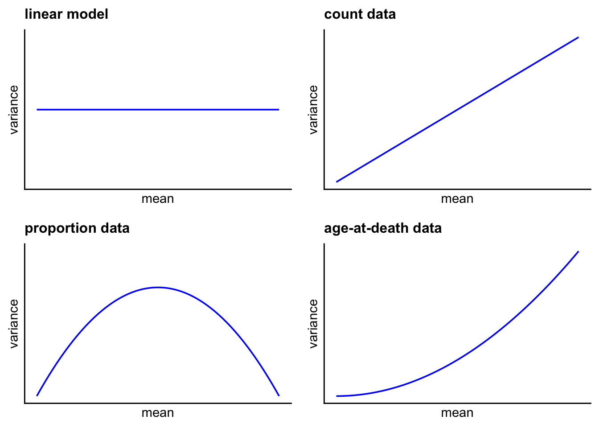

13 GLM introduction
This chapter draws on Michael Crawley’s Statistics: An introduction using R, 2nd Ed, Wiley.
In many settings we have a response variable such as a weight, length or concentration that is a continuous real number.
For many common analyses of those variables, such as t-test, regression, ANOVA, or in fact any manifestation of the linear model, the data needs to have the following attributes:
- random sampling
- constant variance
- normally distributed errors
- independent errors
- additive effects
If one or more of these assumptions is wrong, the analyses become unreliable in that the claims that they make will be based on assumptions that are false.
In ecology and many other fields, this is very commonly the case.
Consider for example the variance of some commonly encountered types of data:
Count data
These are whole numbers that can never be negative. That straight away gives a problem with the assumptons of the linear model if the counts are typically low. To have ‘normally distributed errors’ would require that some of the counts be negative, which is nonsense.
Regardless of that, it is the case with many examples of count data - examples where we know how often something did happen, but not how often it did not happen - that the higher the counts, the higher the variance of the counts: think say of a situation where you were recording the numbers of individuals of some species per unit time or area. If the mean number were 5 then you might find counts that varied, say, between 3 and 7, but if the mean number were 500 then would not expect the individual counts to be constrained between 498 and 502. You would expect a greater variance than when the mean was only 5. This is common for count data but it breaks a key assumption of the linear model.
Count data also often has the ‘zero inflation’ problem whereby the number of zeros recorded is high.
We said that this increase in variance with mean count value is found for count data where we know how often something did happen but not how often it did not happen. Examples of this are counts of lightning strikes, meiofauna on a petri dish, birds in a churchyard,
Proportion data
Sometimes, however, as well as knowing how often something did happen, we also know how often it did not happen. We can express each count as a poportion of the total. We could characterise the first counts as ‘successes’ and the second as ‘failures’, although this can sometimes be somewhat macabre in a medical context. Both counts are important to a full analysis of the data.
Examples are:
| Successes | Failures |
|---|---|
| dead | alive |
| female | male |
| diseased | healthy |
| occupied | unoccupied |
| pollinated | not pollinated |
| adult | juvenile |
| exhibits behaviour A | does not exhibit behaviour A |
| heterozygous | homozygous |
As another example you might be studying the behaviour of civets in a zoo in time blocks of 20 minutes. For every minute within each block you record whether the civets appeared agitated. At the end of each block you will know the proportion p of one minute slots within which they were agitated and the proportion 1-p when they were not.
This type of data has low variance when proportions are very low, around zero, or very high, around one, since all or nearly all individuals are alike in either case. In between, the variance peaks when the proportion is around 0.5 (50:50) and there are many successes and failures.
Hence, unlike count data where the variance increases monotonically with the mean count, with proportion data the variance is a humped function of the mean. For this reason, proportion data is often analysed using the Binomial distribution. If p is the probability of a success and (1-p) is the probability of a failure, the mean number of successes is np and the variance of this number of success is np(1-p). Hence this variance will be zero if p = 0 or if p = 1, and is maximised if p = 0.5.
Percentage cover data
This is a type of proportion data where the data are continuous but bounded, ranging from 0% to 100%, with values outside that range being impossible and meaningless. You might encounter this when doing flora and fauna surveys with quadrats, and are recording a species for which individual counts are not possible, for example barnacles or many macroalgae on a rocky shore, or grasses in a meadow. Its variance will vary in a similar way to proportion data derived from count data: tendding towards zero for either 0% or 100% cover, and maximal when the cover is around 50%. In this case, a common approach is to arcsine transform the data, and then analyse it using linear models, but consider usin the GLM approaches discussed below.
13.1 What to do when the linear model is not applicable?
A common approach to try to solve at least part of the problem is to ‘transform’ the response data such that its distribution more resembles that of a ‘normal’ distribution. This usually means operating on it with functions such as square root or log that have the effect of pulling in the long tails of highly skewed distributions. This approach has its limitations. For one thing, it is the errors (ie the difference between the actual and the predicted values) that should be normally distributed, not the the data themselves.
A more powerful and versatile approach is to use generalized linear models, commonly referred to as GLMs.
13.2 Introduction to Genralized Linear Models (GLMs)
A generalized linear model has three important properties:
- the error structure
- the linear predictor
- the link function
While none of these concepts is likely to be familiar, the ideas behind each of them are straightforward and it is worth getting to know what each one involves.
13.3 The Error Structure
In the linear model, which underpins such analyses as the various forms of t-test, ANOVA, linear regression or pearson correlation, the errors are assumed to be normally distributed. By ‘error’ we means the difference between the observed value and the mean of a population, or the difference between an observed or a fitted value, as in regression.
Often, this is not the case, certainly in ecology and in many studies within the life sciences. It is common to have data for which the errors do not have a normal distribution.
The errors may be:
- strongly skewed - a few errors are much larger (most common) or smaller than the rest
- strongly kurtotic - much more scrunched up or spread out than would be consistent with a normal distribution
- strictly bounded - they can’t imply values beyond the realms of what is phyiscally possible, as in proportion data.
- strictly positive - as with count data, where negative values are meaningless.
Before the advent of GLMs, any of these error issues would have required the use either of a transformation of the response data or the use of non-parametric methods, whereby the response data were ranked and only those ranks were then used in subsequent analysis, the actual values being ignored, with consequent loss of power as a result of not using this information. A GLM allows one to specify a variety of commonly encountered types of error distribution:
- Poisson errors - useful with count data
- binomial errors - useful with proportion data
- gamma errors - useful with data that show a constant coefficient of variation
- exponential errors - useful with data on time to death (survival analysis)
In R the error structure is defined by means of the family argument, thus:
glm(y ~ z, family = poisson)
if the response variable has Poisson errors
or
glm(y ~ z, family = binomial)
if the response is binary and has binomial errors.
The response variable z can be continuous, leading to a regression analysis, or categorical, leading to an ANOVA-like procedure called analysis of deviance.
13.4 The linear predictor
In a GLM, each observed value y is related to a predicted value, which is obtained by transformation of the value emerging from the linear predictor \(\eta\). This linear predictor is a linear sum of the effects of one or more explanatory variables \(x_j\). It is what you would see if you asked in R for summary.lm.
\[ \eta_i = \sum_{j=1}^px_{ib}\beta_j \] The \(x\)s are the values of the p different explanatory variables and the \(\beta\)s are the (usually) unknown poarameters to be estimated from the data. The right-hand side of this equation is called the linear structure. Thre are as many terms in this as there are parameters to be estimated, that is p.
13.5 Fitted values
13.5.1 Deviance: a general measure of variability
Deviance is a generalisation of the concept of variance: it is a measure of the lack of fit of the model to the data.
\[ \text{deviance} = -2\times\text{log likelihood} \]
where the log likelihood depends on the model, given the data. Deviance is the same as variance when we have constant variance and normally distributed errors, as with linear regression, ANOVA and ANCOVA. That is, the appropriate measure of lack of it is \((y-\hat{y})^2\). For count data, however, we need another measure of lack of fit, which turns out to be \(y\log(\frac{y}{\hat{y}})\). Other types of data need yet other measures of lack of it. Here is a summary table of them:
| Model | Deviance | Error | Link |
|---|---|---|---|
| linear | $\sum \left(y-\hat{y}\right)^2$ | Gaussian | identity |
| log linear | $2\sum y\log{\left(\dfrac{y}{\hat{y}}\right)}$ | Poisson | log |
| logistic | $2\sum y\log{\left(\dfrac{y}{\hat{y}}\right)} +(n-y)\log{\left(\dfrac{n-y}{n-\hat{y}}\right)}$ | binomial | logit |
| gamma | $2\sum {\dfrac{(y-\hat{y})}{y} - \log{\left(\dfrac{y}{\hat{y}}\right)} }$ | gamma | reciprocal |
13.6 The link function
The predicted value of y is related to the linear predictor value \(\eta\) via the link function g:
\[ \eta = g(\mu) \] What we mean by this is that the value of \(\eta\) is obtained by transforming y by the link function, and the predicted value of y is obtained by applying the inverse of the link function to \(\eta\).
In the case of the identity link, the linear predictor is the predicted value of y. Hence, in simple linear regression, we are in effect using a special case of the GLM, one where the link function is the identity ie do nothing.
13.7 Canonical link functions
The most commonly used link functions are shown below. A key requirement of any link function is to ensure that fitted values stay within reasonable bounds. Thus if the response is a count, the fitted values should all be zero or positive, and if a proportion, should be between zero and one, and so on.
Thus for count data, the log function is an appropriate link function, since the fitted values are then antilogs of the linear predictor, and so are guaranteed to be greater than or equal to zero. For proportion data, the logit function is appropriate since the fitted value is then the antilog of the log odds \(\log(\frac{p}{q})\), ie \(\frac{p}{q}\), which is a proportion, guaranteed to be between zero and one since \(p\leq q\) and both \(p\) and \(q\) are non-negative.
| Error | Canonical Link |
|---|---|
| gaussian | identity |
| poisson | log |
| binomial | logit |
| Gamma | reciprocal |